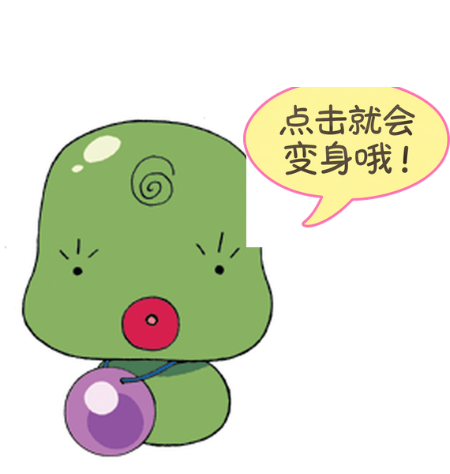

★ 东映动画 · 小魔女DoReMi 官方中文门户
Ren'Py 8 移植版 v1.0.0
GitHub
简体中文
日本語
作品首页
故事梗概
人物介绍
各集介绍
制作人员
片头·片尾曲
游戏下载
实机截图

魔女莉卡
原本在DoReMi她们居住的小镇开店，却因为被DoReMi识破真身而变成了魔女青蛙。
原本一心想积攒魔法力量之源的「魔法球」、立志成为魔女界的女王，如今却只能拼命督促DoReMi她们去赚取魔法球，好早日让自己恢复原貌。正因为是正统魔女，无论善恶观念还是审美标准都与常人大相径庭，整天被DoReMi她们的举动气得暴跳如雷。虽然嘴上不说，其实骨子里相当狡猾，总想打主意骗过DoReMi她们，但因为总会露出马脚，从来没有一次成功过。
© ABC・東映アニメーション / AMADA PRINTING MFG. CO., LTD. ｜
小魔女DoReMi冒险 ～「秘密的魔法」～ Ren'Py 8 移植版